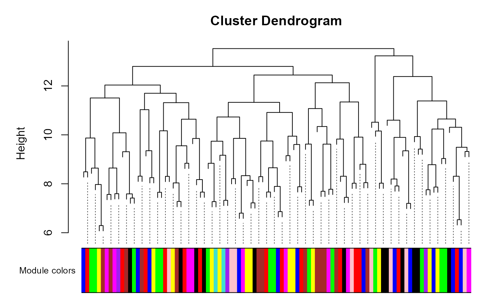

Get the dendrogram stored in a ModularExperiment
Source:R/methods-ModularExperiment.R
module_dendrogram.RdGet the dendrogram stored in a ModularExperiment
Usage
# S4 method for class 'ModularExperiment'
dendrogram(object)
# S4 method for class 'ModularExperiment'
dendrogram(object) <- valueArguments
- object
A ModularExperiment object.
- value
New value to replace existing dendrogram.
Value
Returns a dendrogram describing relationships between genes. Usually produced through hierarchical clustering using the blockwiseModules function.
Examples
# Create ModularExperiment with random data (100 features, 50 samples,
# 10 modules)
me <- ReducedExperiment:::.createRandomisedModularExperiment(100, 50, 10)
me
#> class: ModularExperiment
#> dim: 100 50 10
#> metadata(0):
#> assays(1): normal
#> rownames(100): gene_1 gene_2 ... gene_99 gene_100
#> rowData names(0):
#> colnames(50): sample_1 sample_2 ... sample_49 sample_50
#> colData names(0):
#> 10 components
# The dendrogram is usually produced during module discovery, but we can
# assign any dendrogram to the slot. Let's do hierarchical clustering on the
# features in our object and assign it
dendrogram(me) <- hclust(dist(assay(me)))
dendrogram(me)
#>
#> Call:
#> hclust(d = dist(assay(me)))
#>
#> Cluster method : complete
#> Distance : euclidean
#> Number of objects: 100
#>
# Can use default plotting approach
plot(dendrogram(me))
# Or class method that calls WGCNA::plotDendroAndColors
plotDendro(me)
